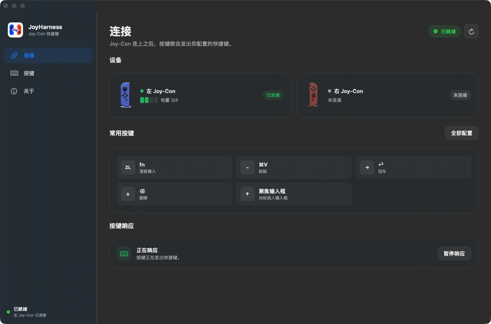
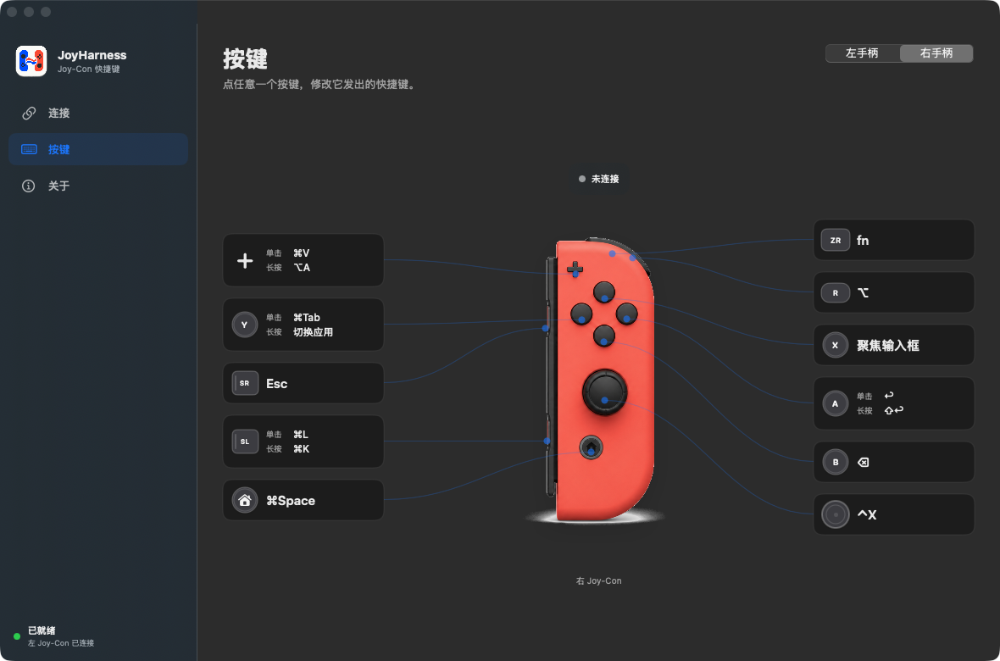

开始前准备
- 运行 macOS 13 或更高版本的 Mac
- 已下载并装好 JoyHarness。安装包已通过 Apple 公证，双击就能打开
- 至少一只已经充电的 Nintendo Switch Joy-Con
- 一个能用系统快捷键启动的语音输入工具（Typeless、豆包等都行）
- 在那个工具里先把启动快捷键设成 fn —— JoyHarness 只负责把 fn 发出去，谁来接是它自己的设置
步骤 1
允许辅助功能
辅助功能用于把 Joy-Con 操作发送为你配置的快捷键。JoyHarness 不申请输入监控权限。
辅助功能执行你配置的系统快捷键
步骤 2
连接任意一只 Joy-Con
- 打开“系统设置 → 蓝牙”。
- 让 Joy-Con 进入配对状态，并在设备列表中完成连接。
- 回到 JoyHarness，确认连接页显示手柄名称和电量，并且「按键响应」一栏是绿色的「正在响应」。
一只就够。 左手柄或右手柄都能独立完成整套语音工作流；连接一对只是增加可用按键，并非前提。

步骤 3
亲自跑通一次语音输入
- 打开任意文本输入框，让光标保持聚焦。
- 按一下右手柄 ZR，它会发出 fn，启动你的语音输入工具。
- 说一句完整的话，确认整理后的文字出现在输入框中。
- 按一下 A，确认发送或换行行为符合当前应用预期。
需要边说边出文字时，长按 + 触发 ⌥ A，进入豆包连续听写。
默认右手柄语音按键
ZR 单击fn · 启动语音输入
+ 长按⌥ A · 豆包连续听写
A 单击↩ · 确认发送

看到这三个结果，配置才算完成
- 连接页显示 Joy-Con 已连接，「按键响应」是「正在响应」
- 按 ZR 后，语音工具能在真实输入框中生成文字
- 按 A 后，当前应用正确执行确认发送或换行